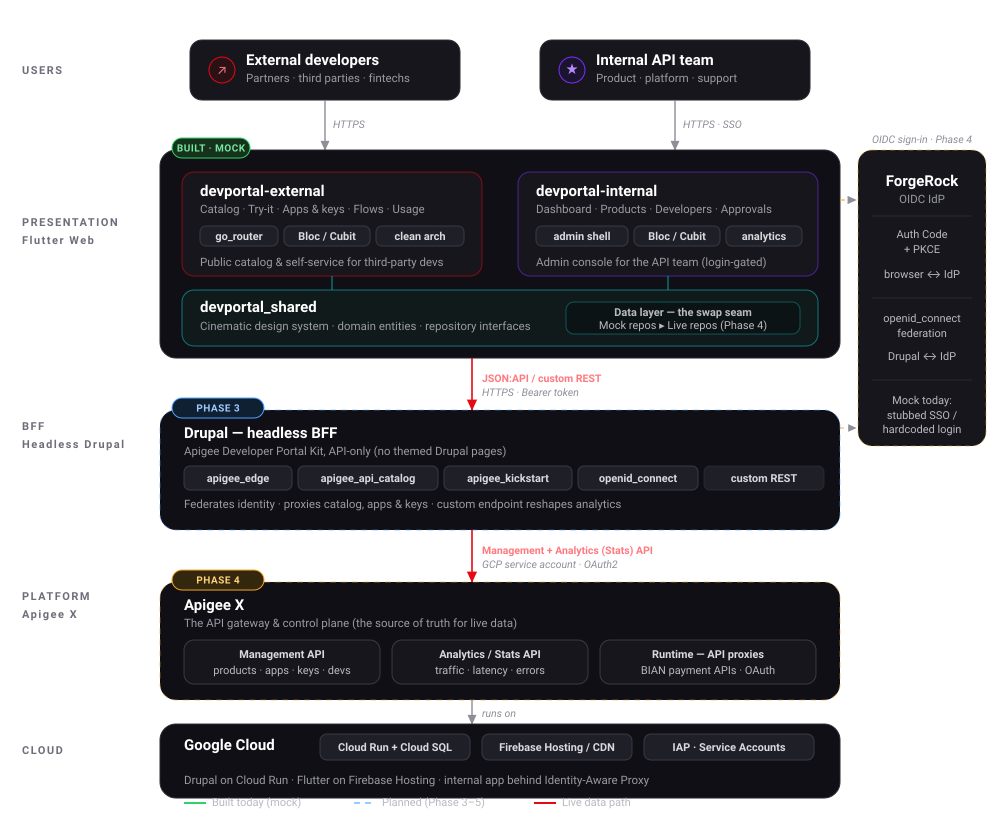

Developer Portal — System Documentation
Internal + external developer portals for Apigee X: how the pieces fit, what ships next, and how it goes live.
This is the engineering reference for the developer portal — a pair of Flutter Web applications (one external, one internal) that front an Apigee X API program. It explains how the system is put together today, what ships in each upcoming phase, how the live integration will work, and how it gets deployed and operated on Google Cloud. A step-by-step how-to guide covers day-to-day usage.
Where things stand today
Both portals are built and clickable as Phase-1/2 mocks: real UI, real navigation, real interactions — running entirely on in-memory JSON fixtures. No live backend is wired yet. Everything below marked Phase 3+ is planned, not built.
The system at a glance#

Two portals, one shared core#
| External portal | Internal portal | |
|---|---|---|
| Repo | devportal-external |
devportal-internal |
| Audience | Third-party developers, partners, fintechs | The API team (product, platform, support) |
| Shape | Public catalog + self-service | Login-gated admin console |
| Does | Browse APIs, register apps, get keys, try APIs live, run payment flows, see usage | Publish products, manage developers, work the approval queue, watch org analytics |
| Access | Public internet (CDN) | Behind Identity-Aware Proxy / corporate SSO |
Both apps are thin: they depend on devportal_shared, a single Flutter
package that holds the cinematic design system, the domain model, and the data
layer. That package is where the mock-to-live swap happens — see the
Integration path.
How it's built#
- Front end — Flutter Web, Bloc/Cubit + clean architecture (domain /
data / presentation),
go_router. Each route owns a Cubit; pages talk only to repository interfaces. - Design — a token-driven cinematic dark theme. Every brand value lives
in one file (
tokens.dart), so a real corporate brand is a single-file swap. - Backend (planned) — a headless Drupal backend-for-frontend using the Apigee Developer Portal Kit, which brokers to the Apigee X management and analytics APIs. Identity federates from ForgeRock (OIDC).
- Domain — the running example is payments, modelled on BIAN service domains: Payment Initiation, Payment Order, Payment Execution.
Read next#
Run the mocks locally
From either app repo: flutter pub get && flutter run -d chrome. The internal
console is login-gated — sign in with admin / passWORD1234#. The external
portal needs no credentials: click Continue with SSO.